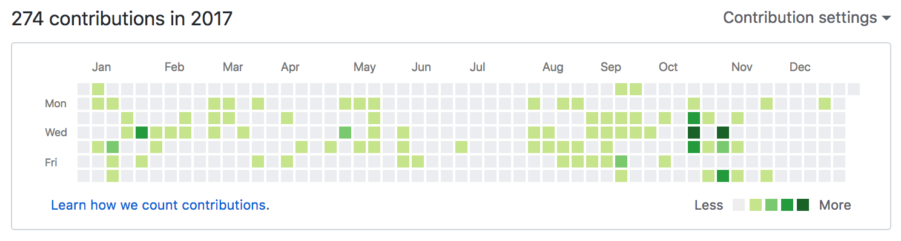

Fix for Extra Revenue Bug Apr 16
If your historical revenue numbers have changed this week, it's because of this fix.
Some time ago Stripe changed the uniqueness of one of the item identifiers. As I implemented support for this change, I introduced a bug that caused some invoice lines to be imported twice.
That's why some of the revenue also got booked twice.
I'm running a fix to remove the extra lines and recalculate the revenue again. The work should be over by the end of the week. I'm sorry for this.
Now showing end-of-term subscriptions by plan Mar 21
"MRR Waiting For Renewal" view now shows also the End-of-Term Subscription MRR and count.
Knowing how many subscriptions are up for renewal in each month is important information for cash-flow planning purposes. FirstOfficer already shows the summary of this information in Metrics view. However, if you have 3-month or 6-month plans, the annual and monthly summaries in Metrics view are not enough.
To access Waiting For Renewal view, go to the MRR view and click the numbers in the "Waiting for Renewal column" in the main data table. When you are in Waiting for Renewal view, use the green arrows in upper left corner to move between months.
Better DB performance Jan 20
The news have not been updated for a while, but things are going forward under the hood. Here are the contributions to FirstOfficer's Github repos: 
FirstOfficer had some growth pains that needed to be addressed. At the moment the DB performance is at OK level, but further work is expected as the dataset grows.
There has also been a lot of internal support dashboard and automation work.
There have been some minor UI additions and improvements.
Special case support for switching between annual subscriptions Nov 9
In some special cases, FirstOfficer did not book upgrades between annual plans right. Events were missing from the period between the proration and the new subscription start date.
The problem is now fixed and the metrics are being regenerated for the handful of you who were affected.
The current total of automated tests in FirstOfficer for catching special cases like this is 289, so hopefully we are approaching the point where most of the special events from Stripe are handled right.
Support for quantities in non-Stripe invoices Oct 26
This change only affects invoices imported manually or through the API. It does not affect invoices in Stripe.
Problem: It has not been possible to add seats/quantities to existing subscription when importing non-Stripe invoices.
Solution: If 'subscription ID' is filled, FirstOfficer will add quantities into the subscription referenced instead of creating a new subscription.
Changes to churn recognition Oct 5
Problem: FirstOfficer marks customer as lost immediately when charging fails. But what should be done when invoice is not created?
If loss of customer is probable and we do not mark the customer as lost, the MRR estimate will be temporarily too high.
If retention is probable and we mark the customer as lost, the losses will be temporarily overestimated.
Old Solution: Wait 14 days and then mark customer as lost.
Majority of missing invoices were caused by rare delays in Stripe invoicing. The invoices were eventually always sent. However, when FirstOfficer API was added, we now face an increasing amount of missing invoices where the loss of the customer is probable. 14-day wait period prevents you from getting the churn information in time.
New Solution: For non-Stripe invoices, wait 6 hours and then mark customer as lost. For Stripe invoices, wait 4 days and then mark customer as lost.
This solution should ensure timely detection for real losses and still prevent false alarms from temporary system malfunctions.
API in beta Aug 15
FirstOfficer API is now open for beta-testing. You can now import non-Stripe invoices programmatically.
Churn for 3-month and 6-month plans Jun 30
Do you have 3-month or 6-month plans? FirstOfficer now shows the monthly churn and LTV for them too. You still get the churn for the whole subscription period, just like before.
Export Jun 2
Do you need to export data from FirstOfficer? The export catalog is now open for beta-testing.
View the export catalog.
One of my own favourites is the possibility to export your cohort retention by plan. Enjoy!
Year report 2016 Mar 3
You can now view the 2016 month-to-month comparison report in FirstOfficer. I also added a handy link to the upper right corner where you can view the older reports.
View your 2016 January-February report here
There’s also a change in weekly email report. The 30-day revenue used to show only subscription revenue. From now on it will also include single purchases (non-subscription revenue).